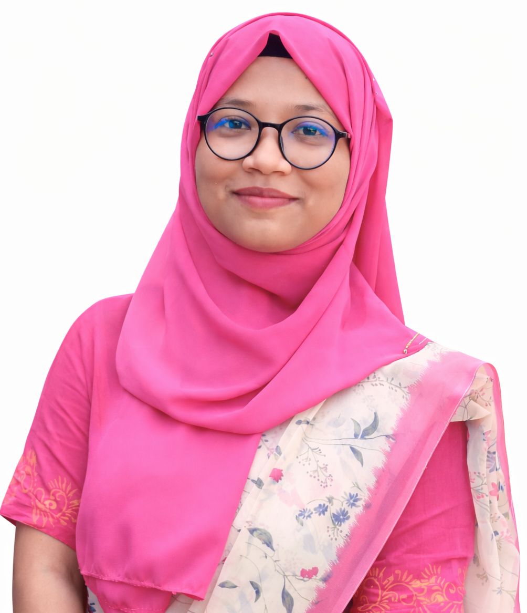

Interpretable CNN-LSTM Framework for Multiclass Neuromuscular Disorder Classification Using Clinically Relevant EMG Features
Anika Tasnim Ritu, Shahed Hossain, Md. Zahid Hasan, Sushanto Bosak, Abubokor Hanip, Touhid Bhuiyan

Lecturer, Department of Electrical and Electronic Engineering
Bangladesh Army University of Engineering & Technology
Biomedical signal processing, machine learning, explainable AI, and wearable healthcare technologies for clinically relevant health analytics.
I am a Lecturer in the Department of Electrical and Electronic Engineering at Bangladesh Army University of Engineering & Technology (BAUET), Bangladesh. I received the B.Sc. degree in Electrical and Electronic Engineering from Rajshahi University of Engineering & Technology (RUET), graduating 3rd out of 123 students with a CGPA of 3.90/4.00, and the M.Sc. degree in Electrical Engineering from RUET with a CGPA of 4.00/4.00.
My research interests span biomedical signal processing, physiological signal analysis, wearable healthcare technologies, machine learning, deep learning, and explainable artificial intelligence (XAI). I am particularly interested in developing interpretable, data-driven, and clinically relevant AI frameworks for healthcare applications involving physiological signals, wearable sensing systems, and medical data.
My research has been published in IEEE Transactions on Artificial Intelligence and presented at international IEEE conferences. I currently collaborate with the Health Informatics Research Laboratory (HIRL), Daffodil International University, where my research focuses on biomedical signal analysis, neuromuscular disorder classification, medical image analysis, physiological data modeling, and AI-driven healthcare technologies.
Rajshahi University of Engineering & Technology (RUET)
Rajshahi University of Engineering & Technology (RUET)
Anika Tasnim Ritu, Shahed Hossain, Md. Zahid Hasan, Sushanto Bosak, Abubokor Hanip, Touhid Bhuiyan
Sushanto Bosak, Md. Rashidul Islam, Md. Rafiqul Islam Sheikh, Anika Tasnim Ritu, Md. Biplob Hossain, M. J. Hossain
Shahed Hossain, Md. Mahmudul Sayeb, T. A. Patwary, M. Mehenaj, Anika Tasnim Ritu, et al.
Md. Zahid Hasan, R. Ibrahim, A. Fariha, N. Sakib, S. T. Jahan, M. Momtaj, M. A. Rahman, Anika Tasnim Ritu, et al.
Anika Tasnim Ritu, Ajay Krishno Sarkar, Sushanto Bosak
Anika Tasnim Ritu, Ajay Krishno Sarkar, Sushanto Bosak
Habibur U. Rahman, Anika Tasnim Ritu, H. J. Rasha, Md. Shahin Anower
Md. Sahariar Sorkar, Md. Mahmudur Rahman, Anika Tasnim Ritu
Md. Tanvir Nabi, Md. Naimul Hasan, Anika Tasnim Ritu, J. Jumana, I. Z. Netto
Anika Tasnim Ritu, Ajay Krishno Sarkar
Anika Tasnim Ritu, Ajay Krishno Sarkar
Shahed Hossain, Anika Tasnim Ritu, et al.
Department of Electrical and Electronic Engineering, Bangladesh Army University of Engineering & Technology
Department of Electrical and Electronic Engineering, Bangladesh Army University of Engineering & Technology
Health Informatics Research Laboratory, Daffodil International University
Department of Electrical and Electronic Engineering, RUET
Awarded for top performance in four national public examinations, with scholarship tenure extending from primary education through undergraduate studies.
Email: anika.eee16.ruet@gmail.com
Google Scholar: Profile
LinkedIn: Profile